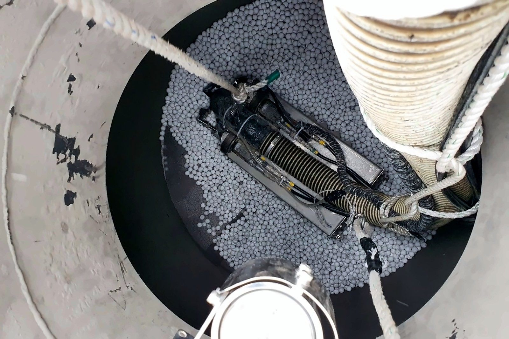
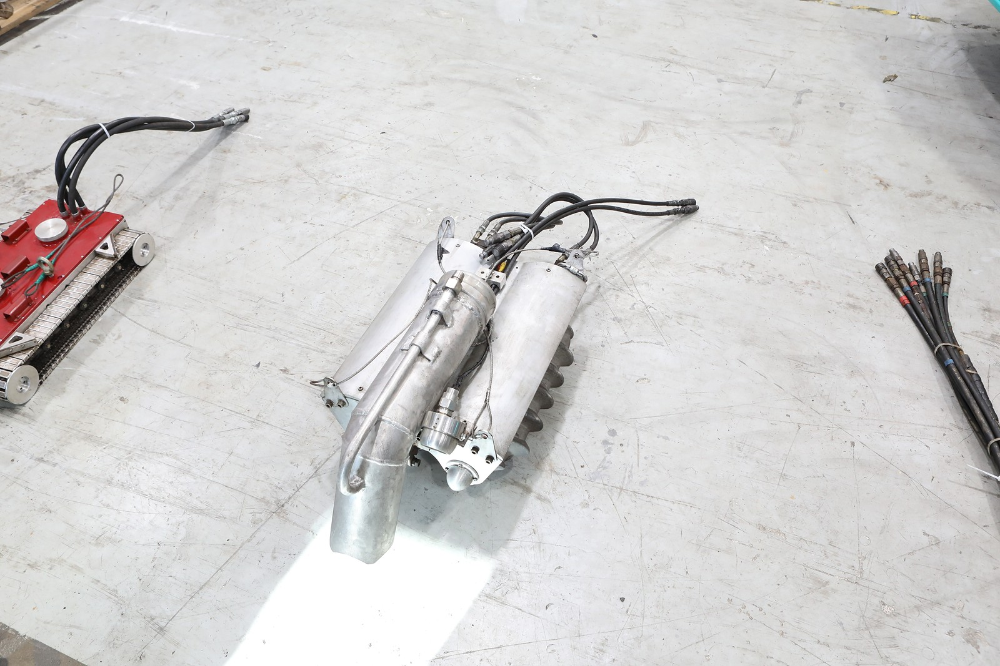
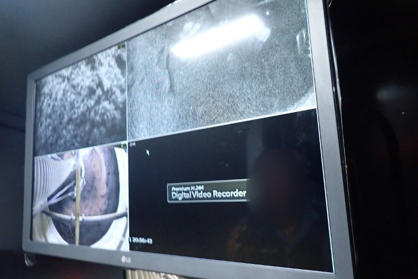
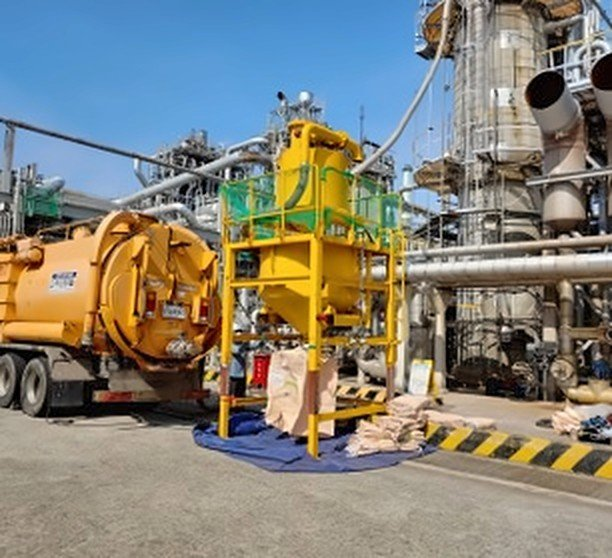
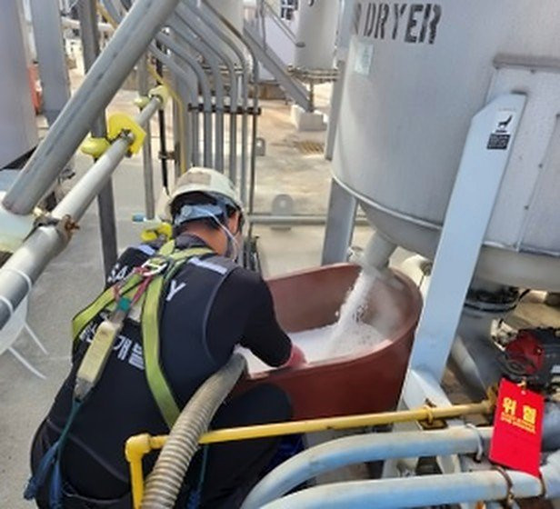
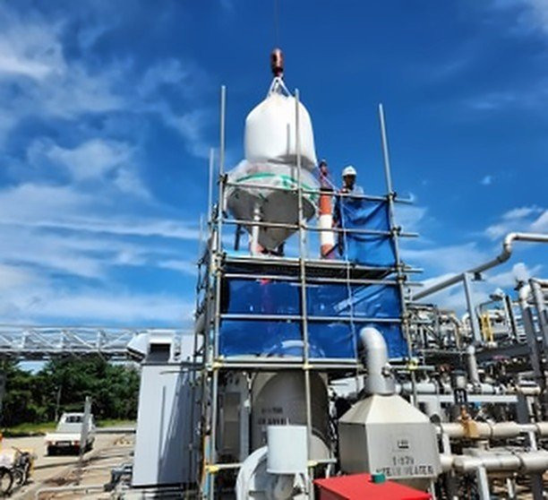

02촉매·충진물 작업작업 방식
반응기 촉매 작업은 이렇게 구성합니다
공사개략도(촉매) — 기술소개서(2025) 18쪽의 구성



02설비 밖제어 차량 (원격 조종·CCTV)
작업자가 CCTV로 내부를 보며 로봇 조종
제어 차량 03설비 밖
03설비 밖진공흡입차
호스로 연결해 회수물 흡입
진공흡입차(건식) 4대
04설비 밖분리장치 (Separator)
촉매·충진물 작업에서 회수물 분리
AUTO SEPARATOR 6SET
기술소개서(2025) 18쪽 공사개략도(촉매) · 회사소개서(2024) 21~24쪽 보유 장비
촉매 교체 현장
회사소개서 촉매 쪽에 실린 현장 사진
회사소개서(2024) 11쪽 EQUIPMENT CLEANING(CATALYST)


02촉매·충진물 작업보유 장비
촉매 회수 · 선별 장비
건식 진공흡입차, AUTO SEPARATOR, 선별기로 촉매를 회수·선별하고, 집진기로 분진을 회수합니다. 반응기 내부 작업에는 흡입 로봇을 투입합니다.
회사소개서(2024) 21~24쪽 보유 장비
| 장비 | 규격 | 용도 | 보유 |
|---|---|---|---|
| 진공흡입차(건식) | 12㎥ | 촉매 교체 | 4대 |
| AUTO SEPARATOR | 5㎥ / 3㎥ | 촉매 교체 | 6SET |
| 원형 선별기 | — | 촉매 교체 | 1대 |
| 다단 선별기 | — | 촉매 교체 | 1대 |
| 집진기 | — | 촉매 교체 | 1대 |
| 백필터 집진기 | — | 분진 회수 | 1대 |
02촉매·충진물 작업알아 두실 점
폐기물 제거 작업 용도별 적용 예시 — 로봇을 쓸 때 좋아지는 점과 유의할 점
좋아지는 점
- 연속 작업 가능 — 조작자 교대, 장비 연속 가동
- 작업자 안전 확보 — 질식 위험, 위험물질 노출
- 질소 공간 무인 작업 가능
유의할 점
- 비산물 등에 따른 시야 저하 — CCTV 연동을 통한 시야 확보
- 인력작업 대비 작업효율 70% — 연속 작업을 통해 효율 확보
- 맨웨이(M/W) 한계: 최소 18″
적용 범위
- Reactor / Tank 내부(질소 분위기 포함) 충진물 제거 작업
- 방폭 지역 작업 가능
- 기타 설비 Sludge 및 고형 폐기물 제거 작업
기술소개서(2025) 12쪽 용도별 적용 예시 — 글 그대로
관련 기술 이 분야와 닿는 특허 · 연구개발 · 로봇
- 연구개발 과제능동형 촉매 적재장치촉매 반응탑 내 고체 촉매의 고밀도 적층 · 공압 구동기술소개서(2025) 38~40쪽
- 로봇 세대5세대 파쇄형 · 소형화적용 대상 Pond, Reactor · 수중 작업 가능 · 유압기술소개서(2025) 7쪽
02촉매·충진물 작업
촉매 · 충진물 교체를 앞두고 계신가요?
설비 종류 · 충진물 특성 · 요청 범위 · 희망 일정 등을 알려 주시면 가능한 작업 범위와 진행 방법을 안내해 드립니다.